280 equations — 280 machine-verified, 0 flagged. Green = verified, amber = flagged (still shows best LaTeX + source crop).
| # | ID | Status | Rendered (KaTeX) | Source crop (PDF) |
|---|---|---|---|---|
| 1 | II-1-1 | single_verified | $$u = \frac{\partial \Phi}{\partial x}$$ | 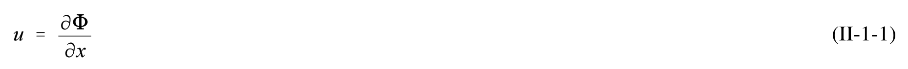 |
| 2 | II-1-2 | agreed | $$w = \frac{\partial \Phi}{\partial z}$$ | 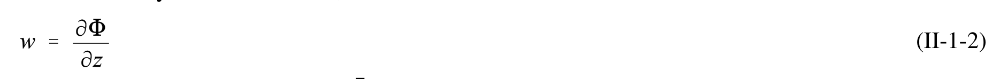 |
| 3 | II-1-3 | agreed | $$\frac{\partial \Phi}{\partial x} = \frac{\partial \Psi}{\partial z}$$ | 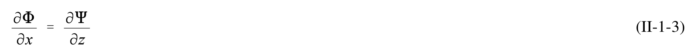 |
| 4 | II-1-4 | agreed | $$\frac { \partial \Phi } { \partial z } \, = \, - \frac { \partial \Psi } { \partial x }$$ | 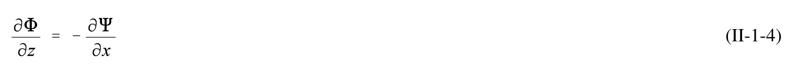 |
| 5 | II-1-5 | agreed | $$\frac{\partial^2 \Phi}{\partial x^2} + \frac{\partial^2 \Phi}{\partial z^2} = 0$$ | 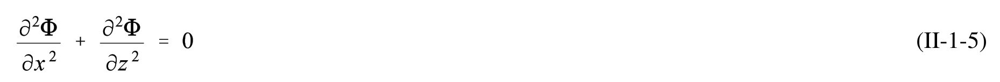 |
| 6 | II-1-6 | agreed | $$\frac{\partial^2 \Psi}{\partial x^2} + \frac{\partial^2 \Psi}{\partial z^2} = 0$$ | 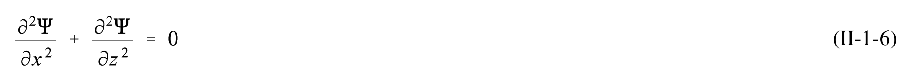 |
| 7 | II-1-7 | agreed | $$C = \frac{L}{T}$$ | 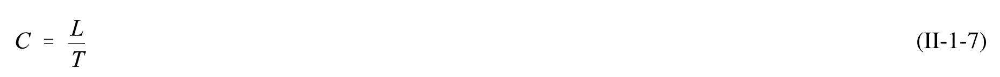 |
| 8 | II-1-8 | agreed | $$C = \sqrt{\frac{gL}{2\pi}} \tanh\left(\frac{2\pi d}{L}\right)$$ | 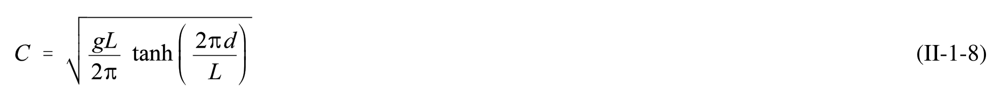 |
| 9 | II-1-9 | single_verified | $$C = { \frac { g T } { 2 \pi } } \ \mathrm { t a n h } \left( { \frac { 2 \pi d } { L } } \right)$$ | 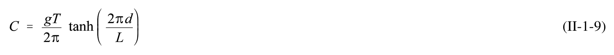 |
| 10 | II-1-10 | agreed | $$L = \frac{gT^2}{2\pi} \tanh\left(\frac{2\pi d}{L}\right) = \frac{gT}{\omega} \tanh\left(kd\right)$$ | 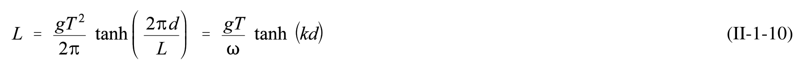 |
| 11 | II-1-11 | agreed | $$L \approx \frac{gT^2}{2\pi} \sqrt{\tanh\left(\frac{4\pi^2}{T^2}\frac{d}{g}\right)}$$ | 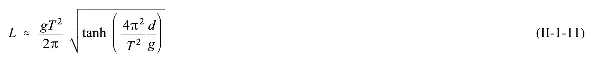 |
| 12 | II-1-12 | agreed | $$C _ { 0 } \ = \ \sqrt { \frac { g L _ { 0 } } { 2 \pi } } \ = \ \frac { L _ { 0 } } { T }$$ | 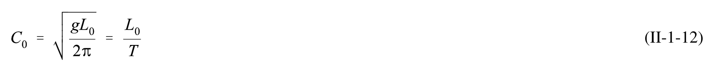 |
| 13 | II-1-13 | agreed | $$C _ { 0 } = \frac { g T } { 2 \pi }$$ | 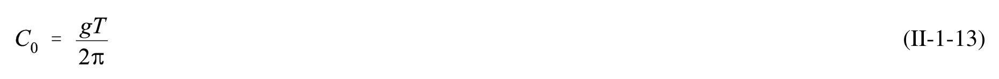 |
| 14 | II-1-14 | agreed | $$C _ { 0 } \ = \ { \frac { g T } { 2 \pi } } \ = \ { \frac { 9 . 8 } { 2 \pi } } \ T \ = \ 1 . 5 6 T \ m / s$$ | 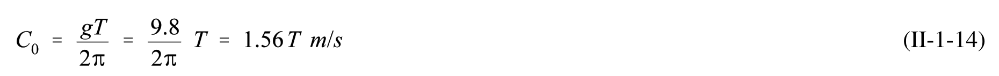 |
| 15 | II-1-15 | agreed | $$L _ { 0 } \ = \ { \frac { g T ^ { 2 } } { 2 \pi } } \ = \ { \frac { 9 . 8 } { 2 \pi } } \ T ^ { 2 } \ = \ 1 . 5 6 T ^ { 2 } \ m$$ | 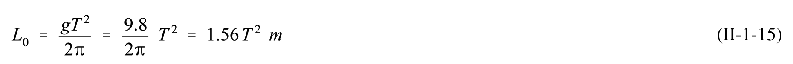 |
| 16 | II-1-16 | single_verified | $$C _ { 0 } \ = \ \frac { g T } { 2 \pi } \ = \ 5 . 1 2 T \: \mathrm{ft} / s$$ | 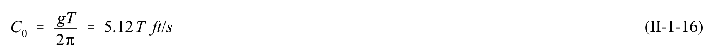 |
| 17 | II-1-17 | agreed | $$L_0 = \frac{gT^2}{2\pi} = 5.12T^2 ft$$ | 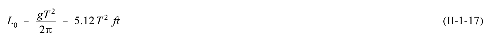 |
| 18 | II-1-18 | agreed | $$C \ = \ { \sqrt { g d } }$$ | 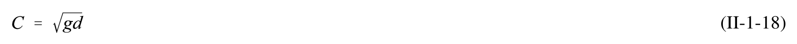 |
| 19 | II-1-19 | agreed | $$\eta \, = \, a \, \cos { \left( k x \, - \, \omega t \right) } \, = \, \frac { H } { 2 } \, \cos { \left( \frac { 2 \pi x } { L } \, - \, \frac { 2 \pi t } { T } \right) } \, = \, a \, \cos { \theta }$$ | 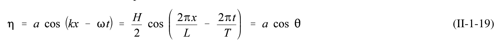 |
| 20 | II-1-20 | single_verified | $$\frac { C } { C _ { 0 } } \ = \ \frac { L } { L _ { 0 } } \ = \ \operatorname { t a n h } \ \left( \frac { 2 \pi d } { L } \right) \ = \ \operatorname { t a n h } \ k d$$ | 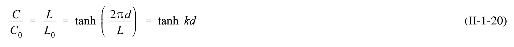 |
| 21 | II-1-21 | agreed | $$\frac{d}{L_0} = \frac{d}{L} \tanh\left(\frac{2\pi d}{L}\right) = \frac{d}{L} \tanh kd$$ | 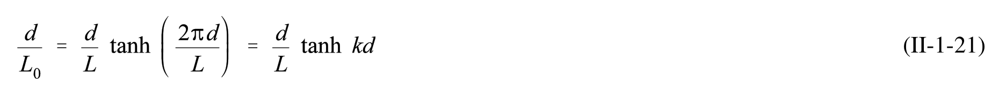 |
| 22 | II-1-22 | agreed | $$L _ { 0 } \, = \, \frac { g T ^ { 2 } } { 2 \pi } \, = \, \frac { 9 . 8 \, T ^ { 2 } } { 2 \pi } \, = \, 1 . 5 6 \, T ^ { 2 } \, m \, ( 5 . 1 2 \, T ^ { 2 } \, f t )$$ | 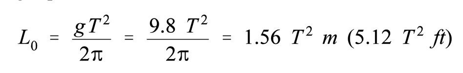 |
| 23 | II-1-23 | agreed | $$L_0 = 1.56T^2 = 1.56(10)^2 = 156 \ m \ (512 \ ft)$$ | 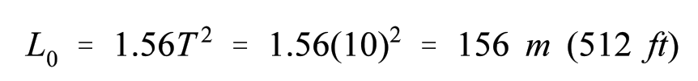 |
| 24 | II-1-24 | agreed | $$\frac { d } { L _ { 0 } } \, = \, \frac { 2 0 0 } { 1 5 6 } \, = \, 1 . 2 8 2 1$$ | 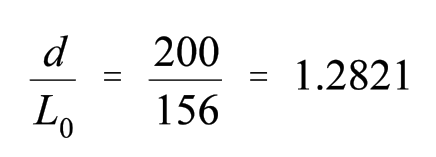 |
| 25 | II-1-25 | agreed | $$\frac { d } { L _ { 0 } } > 1 . 0$$ | 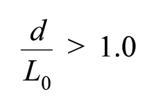 |
| 26 | II-1-26 | agreed | $${ \frac { d } { L _ { 0 } } } \ = \ { \frac { d } { L } }$$ | 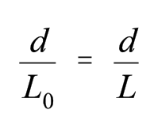 |
| 27 | II-1-27 | agreed | $$L = L_0 = 156 \text{ m } (512 \text{ ft}) \text{ (deepwater wave, since } \frac{d}{L} > \frac{1}{2})$$ | 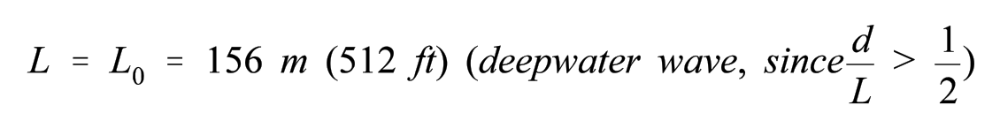 |
| 28 | II-1-28 | agreed | $$C = \frac{L}{T} = \frac{156}{T}$$ | 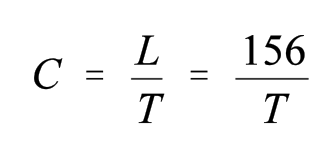 |
| 29 | II-1-29 | agreed | $$C = \frac{156}{10} = 15.6 \text{ m/s} (51.2 \text{ ft/s})$$ | 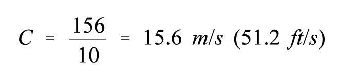 |
| 30 | II-1-30 | agreed | $$\frac { d } { L _ { 0 } } \ = \ \frac { 3 } { 1 5 6 } \ = \ 0 . 0 1 9 2$$ | 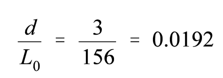 |
| 31 | II-1-31 | agreed | $$\frac { d } { L } \ = \ 0 . 0 5 6 4 1$$ | 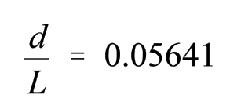 |
| 32 | II-1-32 | agreed | $$L = \frac{3}{0.05641} = 53.2 \ m \ (174 \ ft) \left( \text{transitional depth, since} \frac{1}{25} < \frac{d}{L} < \frac{1}{2} \right)$$ | 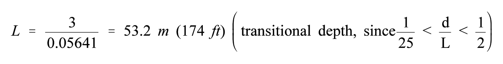 |
| 33 | II-1-33 | agreed | $$C = \frac{L}{T} = \frac{53.2}{10} = 5.32 \text{ m/s} (17.4 \text{ ft/s})$$ | 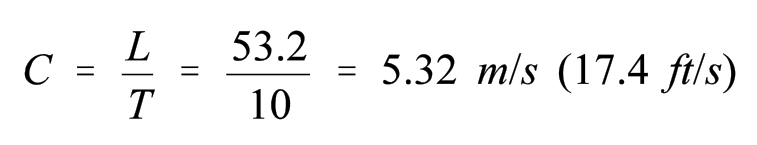 |
| 34 | II-1-34 | single_verified | $$L \approx \frac{gT^2}{2\pi} \sqrt{\tanh\left(\frac{4\pi^2}{T^2}\frac{d}{g}\right)}$$ | 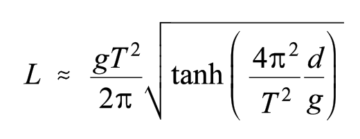 |
| 35 | II-1-35 | agreed | $$L \approx L_0 \sqrt{\tanh\left(\frac{2\pi d}{L_0}\right)}$$ | 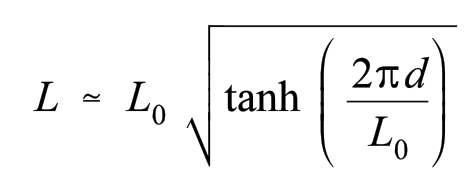 |
| 36 | II-1-36 | agreed | $$L \approx 156 \sqrt{\tanh\left(\frac{2\pi(3)}{156}\right)}$$ | 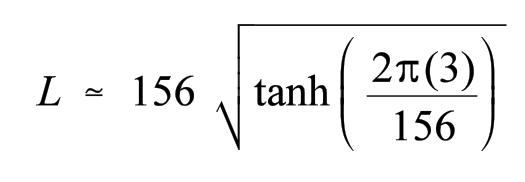 |
| 37 | II-1-37 | agreed | $$L \approx 156 \sqrt{\tanh(0.1208)}$$ | 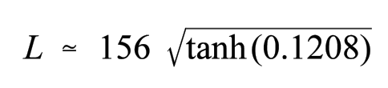 |
| 38 | II-1-38 | agreed | $$L \simeq \: 1 5 6 \: \sqrt { 0 . 1 2 0 2 } \: = \: 5 4 . 1 \: m \: ( 1 7 7 . 5 \: f t )$$ | 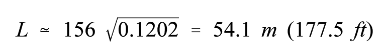 |
| 39 | II-1-22 | agreed | $$u \, = \frac { H } { 2 } \, \frac { g T } { L } \, \frac { \cosh [ 2 \pi ( z + d ) / L ] } { \cosh ( 2 \pi d / L ) } \, \cos \ \Theta$$ | 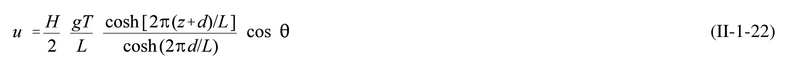 |
| 40 | II-1-23 | agreed | $$w = \frac{H gT}{2} \frac{\sinh[2\pi(z + d)/L]}{\cosh(2\pi d/L)} \sin \theta$$ | 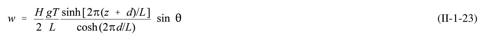 |
| 41 | II-1-24 | agreed | $$\alpha _ { x } \ = \ \frac { g \pi H } { L } \ \frac { \cosh [ 2 \pi ( z \ + \ d ) / L ] } { \cosh ( 2 \pi d / L ) } \ \sin \ \theta \ = \ \frac { \partial u } { \partial t }$$ | 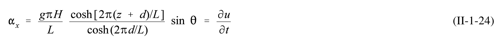 |
| 42 | II-1-25 | agreed | $$\alpha _ { z } \, = \, - \, \frac { g \pi H } { L } \, \frac { \sinh [ 2 \pi ( z + d ) / L ] } { \cosh ( 2 \pi d / L ) } \, \cos \, \theta \, = \, \frac { \partial w } { \partial t }$$ | 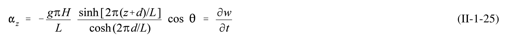 |
| 43 | II-1-26 | agreed | $$\xi = -\frac{HgT^2}{4\pi L} \cdot \frac{\cosh\left(\frac{2\pi(z+d)}{L}\right)}{\cosh\left(\frac{2\pi d}{L}\right)} \sin \theta$$ | 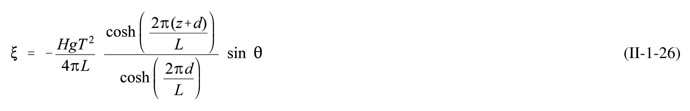 |
| 44 | II-1-27 | agreed | $$\zeta \, = \, + \, { \frac { H g T ^ { 2 } } { 4 \pi L } } \, { \frac { \sinh \left( \, { \frac { 2 \pi ( z \, + \, d ) } { L } } \right) } { \cosh \left( \, { \frac { 2 \pi d } { L } } \right) } } \, \cos \, \Theta$$ | 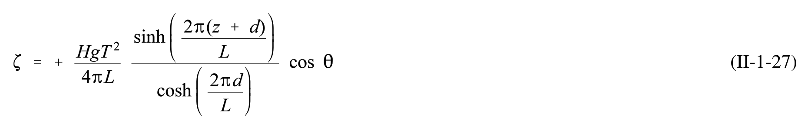 |
| 45 | II-1-28 | single_verified | $$\left(\frac{2\pi}{T}\right)^2 = \frac{2\pi g}{L} \tanh \frac{2\pi d}{L}$$ | 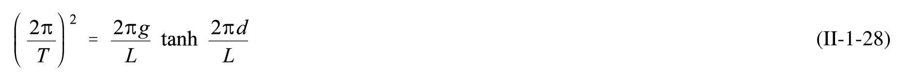 |
| 46 | II-1-46 | agreed | $$L_0 = 1.56T^2 = 1.56(8)^2 = 99.8 \ m \ (327 \ ft)$$ | 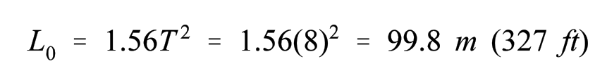 |
| 47 | II-1-47 | agreed | $$\frac { d } { L _ { 0 } } \ = \ \frac { 1 5 } { 9 9 . 8 } \ = \ 0 . 1 5 0 3$$ | 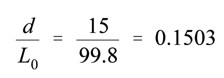 |
| 48 | II-1-48 | agreed | $$\frac { d } { L } \ = \ 0 . 1 8 3 5$$ | 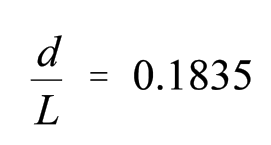 |
| 49 | II-1-49 | agreed | $$\cosh { \frac { 2 \pi d } { L } } \ = \ 1 . 7 4 2$$ | 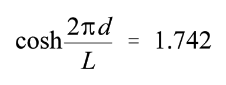 |
| 50 | II-1-50 | single_verified | $$L \, = \, { \frac { 1 5 } { 0 . 1 8 3 5 } } \, = \, 8 1 . 7 \, m \, ( 2 6 8 \, \# )$$ | 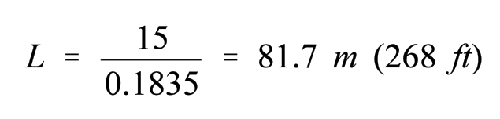 |
| 51 | II-1-51 | agreed | $$\frac { H g T } { 2 L } \, \frac { 1 } { \cosh ( 2 \pi d / L ) } \, = \, \frac { 5 . 5 \, ( 9 . 8 ) ( 8 ) } { 2 \, ( 8 1 . 7 ) } \, \frac { 1 } { 1 . 7 4 2 } \, = \, 1 . 5 1 5$$ | |
| 52 | II-1-52 | agreed | $$\frac { H g \pi } { L } \frac { 1 } { \cosh ( 2 \pi d / L ) } = \frac { 5 . 5 \, ( 9 . 8 ) ( 3 . 1 4 1 6 ) } { 8 1 . 7 } \frac { 1 } { 1 . 7 4 2 } \, = \, 1 . 1 9 0$$ | |
| 53 | II-1-53 | agreed | $$u \, = \, 1 . 5 1 5 \, \cosh \, \left[ { \frac { 2 \pi ( 1 5 \, - \, 5 ) } { 8 1 . 7 } } \right] \, [ \cos \, 6 0 ^ { 0 } ]$$ | |
| 54 | II-1-54 | agreed | $$\frac { 2 \pi d } { L } \ = \ 0 . 7 6 9 1$$ | |
| 55 | II-1-55 | agreed | $$\cosh ( 0 . 7 6 9 1 ) \, = \, 1 . 3 1 0 6$$ | |
| 56 | II-1-56 | agreed | $$\sinh ( 0 . 7 6 9 1 ) \, = \, 0 . 8 4 7 2$$ | |
| 57 | II-1-57 | agreed | $$u = 1.515(1.1306)(0.500) = 0.99 \text{ m/s} (3.26 \text{ ft/s})$$ | |
| 58 | II-1-58 | agreed | $$w = 1.515(0.8472)(0.866) = 1.11 \text{ m/s} (3.65 \text{ ft/s})$$ | |
| 59 | II-1-59 | agreed | $$\alpha_x = 1.190(1.3106)(0.866) = 1.35 \text{ m/s}^2 (4.43 \text{ ft/s}^2)$$ | |
| 60 | II-1-60 | agreed | $$\alpha_z = -1.190(0.8472)(0.500) = -0.50 \text{ m/s}^2 (1.65 \text{ ft/s}^2)$$ | |
| 61 | II-1-29 | agreed | $$\xi = -\frac{H}{2} \frac{\cosh\left(\frac{2\pi(z+d)}{L}\right)}{\sinh\left(\frac{2\pi d}{L}\right)} \sin \theta$$ | |
| 62 | II-1-30 | agreed | $$\zeta = + \frac{H}{2} \frac{\sinh\left(\frac{2\pi(z+d)}{L}\right)}{\sinh\left(\frac{2\pi d}{L}\right)} \cos \theta$$ | |
| 63 | II-1-31 | agreed | $$\sin ^ { 2 } { \theta } { \theta } = \left[ \frac { \xi } { a } \ \frac { \sinh \left( \displaystyle \frac { 2 \pi d } { L } \right) } { \cosh \left( \displaystyle \frac { 2 \pi ( z + d ) } { L } \right) } \right] ^ { 2 }$$ | |
| 64 | II-1-32 | agreed | $$\cos^2 \theta = \left[ \frac{\zeta}{a} \frac{\sinh\left(\frac{2\pi d}{L}\right)}{\sinh\left(\frac{2\pi (z+d)}{L}\right)} \right]^2$$ | |
| 65 | II-1-33 | agreed | $$\frac{\xi^2}{A^2} + \frac{\zeta^2}{B^2} = 1$$ | |
| 66 | II-1-34 | agreed | $$A = { \frac { H } { 2 } } \ { \frac { \cosh \left( { \frac { 2 \pi ( z \ + \ d ) } { L } } \right) } { \sinh \left( { \frac { 2 \pi d } { L } } \right) } }$$ | |
| 67 | II-1-35 | agreed | $$B = \frac{H}{2} \frac{\sinh\left(\frac{2\pi(z+d)}{L}\right)}{\sinh\left(\frac{2\pi d}{L}\right)}$$ | |
| 68 | II-1-36 | single_verified | $$A = B = \frac{H}{2} e^{\left(\frac{2\pi z}{L}\right)}$$ | |
| 69 | II-1-37 | agreed | $$A = \frac{H}{2} \frac{L}{2\pi d}$$ | |
| 70 | II-1-38 | agreed | $$B \, = \, { \frac { H } { 2 } } \left( 1 \, + \, { \frac { z } { d } } \right)$$ | |
| 71 | II-1-71 | agreed | $$L_0 = 1.56T^2 = 1.56(10)^2 = 156 \ m \ (512 \ ft)$$ | |
| 72 | II-1-72 | agreed | $$\frac { d } { L _ { 0 } } \ = \ \frac { 1 2 } { 1 5 6 } \ = \ 0 . 0 7 6 9$$ | |
| 73 | II-1-73 | agreed | $$\sinh \left( \frac { 2 \pi d } { L } \right) \, = \, 0 . 8 3 0 6$$ | |
| 74 | II-1-74 | single_verified | $$\operatorname { t a n h } \left( { \frac { 2 \pi d } { L } } \right) \ = \ 0 . 6 3 8 9$$ | |
| 75 | II-1-75 | single_verified | $$A = \frac{H}{2} \frac{1}{\tanh\left(\frac{2\pi d}{L}\right)}$$ | |
| 76 | II-1-76 | agreed | $$B = \frac{H}{2}$$ | |
| 77 | II-1-77 | agreed | $$A \ = \ { \frac { 3 } { 2 } } \ { \frac { 1 } { ( 0 . 6 3 8 9 ) } } \ = \ 2 . 3 5 \ m \ ( 7 . 7 0 \ f t )$$ | |
| 78 | II-1-78 | agreed | $$B \, = \, \frac { H } { 2 } \, = \, \frac { 3 } { 2 } \, = \, 1 . 5 \, m \, ( 4 . 9 2 \, f t )$$ | |
| 79 | II-1-79 | agreed | $$A = \frac{H}{2 \sinh\left(\frac{2\pi d}{L}\right)} = \frac{3}{2(0.8306)} = 1.81 \ m \ (5.92 \ ft)$$ | |
| 80 | II-1-80 | agreed | $$\frac { 2 \pi z } { L } \ = \ \frac { 2 \pi ( - 7 . 5 ) } { 1 5 6 } \ = \ - 0 . 3 0 2$$ | |
| 81 | II-1-81 | agreed | $$e^{-0.302} = 0.739$$ | |
| 82 | II-1-82 | agreed | $$A = B = \frac{H_0}{2}e^{\left(\frac{2\pi z}{L}\right)} = \frac{3.13}{2}(0.739) = 1.16 \ m \ (3.79 \ ft)$$ | |
| 83 | II-1-83 | agreed | $$z = -\frac{L_0}{2} = \frac{-156}{2} = -78.0 \ m \ (255.9 \ ft)$$ | |
| 84 | II-1-84 | agreed | $$\frac{2\pi z}{L} = \frac{2\pi(-78)}{156} = -3.142$$ | |
| 85 | II-1-85 | agreed | $$e^{-3.142} = 0.043$$ | |
| 86 | II-1-86 | agreed | $$A = B = \frac{H_0}{2} e^{\left(\frac{2\pi z}{L}\right)} = \frac{3.13}{2} (0.043) = 0.067 \ m (0.221 \ ft)$$ | |
| 87 | II-1-39 | single_verified | $$p' = \frac{\rho g H \cosh\left[\frac{2\pi(z+d)}{L}\right]}{2\cosh\left(\frac{2\pi d}{L}\right)} \cos \theta - \rho g z + p_a$$ | |
| 88 | II-1-40 | agreed | $$p = p' - p_a = \frac{\rho g H \cosh\left[\frac{2\pi (z + d)}{L}\right]}{2\cosh\left(\frac{2\pi d}{L}\right)} \cos \theta - \rho g z$$ | |
| 89 | II-1-41 | agreed | $$p = \rho g \eta \frac{\cosh\left[\frac{2\pi(z+d)}{L}\right]}{\cosh\left(\frac{2\pi d}{L}\right)} - \rho g z$$ | |
| 90 | II-1-42 | agreed | $$\eta = \frac{H}{2}\cos\left(\frac{2\pi x}{L} - \frac{2\pi t}{T}\right) = \frac{H}{2}\cos\theta$$ | |
| 91 | II-1-43 | agreed | $$K_{z} = \frac{\cosh\left[\frac{2\pi(z+d)}{L}\right]}{\cosh\left(\frac{2\pi d}{L}\right)}$$ | |
| 92 | II-1-44 | single_verified | $$p \, = \, \mathsf { p } g ( \mathsf { \eta } K _ { z } \, - \, z )$$ | |
| 93 | II-1-45 | agreed | $$K_z = K = \frac{1}{\cosh\left(\frac{2\pi d}{L}\right)}$$ | |
| 94 | II-1-46 | single_verified | $$\eta \ = \ \frac { N ( p \ + \ p g z ) } { \ p g K _ { z } }$$ | |
| 95 | II-1-47 | agreed | $$\eta = \eta_1 + \eta_2 = \frac{H}{2} \cos \left( \frac{2\pi x}{L_1} - \frac{2\pi t}{T_1} \right) + \frac{H}{2} \cos \left( \frac{2\pi x}{L_2} - \frac{2\pi t}{T_2} \right)$$ | |
| 96 | II-1-96 | agreed | $$T = { \frac { 1 } { f } } = { \frac { 1 } { ( 0 . 0 6 6 6 ) } } \approx 1 5 s$$ | |
| 97 | II-1-97 | agreed | $$L_0 = 1.56T^2 = 1.56(15)^2 = 351 \ m \ (1152 \ ft)$$ | |
| 98 | II-1-98 | single_verified | $$\frac { d } { L _ { 0 } } \ = \ \frac { 1 2 } { 3 5 1 } \ \approx \ 0 . 0 3 4 2$$ | |
| 99 | II-1-99 | agreed | $$\frac { d } { L } \ = \ 0 . 0 7 6 5 1$$ | |
| 100 | II-1-100 | agreed | $$L \ = \ { \frac { 1 2 } { ( 0 . 0 7 6 5 1 ) } } \ = \ 1 5 6 . 8 \ m \ ( 5 1 5 \ f t )$$ | |
| 101 | II-1-101 | agreed | $$\cosh \ \left( { \frac { 2 \pi d } { L } } \right) \ = \ 1 . 1 1 7 8$$ | |
| 102 | II-1-102 | agreed | $$K_{z} = \frac{\cosh\left[\frac{2\pi(z+d)}{L}\right]}{\cosh\left(\frac{2\pi d}{L}\right)} = \frac{\cosh\left[\frac{2\pi(-11.4+12)}{156.8}\right]}{1.1178} = 0.8949$$ | |
| 103 | II-1-103 | agreed | $$\frac{H}{2} = \frac{N(p + \rho gz)}{\rho gK_z} = \frac{1.0 [124 + (10.06)(-11.4)]}{(10.06)(0.8949)} = 1.04\,m\,(3.44\,ft)$$ | |
| 104 | II-1-104 | agreed | $$H = 2 ( 1 . 0 4 ) \ = \ 2 . 0 8 \ m \ ( 6 . 3 \ f t )$$ | |
| 105 | II-1-48 | agreed | $$\eta_{envelope} = \pm H \cos \left[ \pi \left( \frac{L_2 - L_1}{L_1 L_2} \right) x - \pi \left( \frac{T_2 - T_1}{T_1 T_2} \right) t \right]$$ | |
| 106 | II-1-49 | agreed | $$C_g = \frac{1}{2} \frac{L}{T} \left[ 1 + \frac{\frac{4\pi d}{L}}{\sinh\left(\frac{4\pi d}{L}\right)} \right] = nC$$ | |
| 107 | II-1-50 | agreed | $$n = \frac{1}{2} \left[ 1 + \frac{\frac{4\pi d}{L}}{\sinh\left(\frac{4\pi d}{L}\right)} \right]$$ | |
| 108 | II-1-51 | agreed | $$C_{g_0} = \frac{1}{2} \frac{L_0}{T} = \frac{1}{2} C_0 \text{ (deep water)}$$ | |
| 109 | II-1-52 | single_verified | $$C_{g_s} = \frac{L}{T} = C \approx \sqrt{gd}$$ | |
| 110 | II-1-53 | agreed | $$\bar{E}_k = \int_x^{x+L} \int_{-d}^{\eta} \rho \frac{u^2 + w^2}{2} dz dx$$ | |
| 111 | II-1-54 | agreed | $$\overline { { E } } _ { k } \ = \ \frac { 1 } { 1 6 } \ \rho \ g \ H ^ { 2 } \ L$$ | |
| 112 | II-1-55 | single_verified | $$\bar{E}_p = \int_x^{x+L} \rho \ g \left[ \frac{(\eta + d)^2}{2} - \frac{d^2}{2} \right] dx$$ | |
| 113 | II-1-56 | agreed | $$\overline { { E } } _ { p } \ = \ \frac { 1 } { 1 6 } \ \rho \ g \ H ^ { 2 } \ L$$ | |
| 114 | II-1-57 | agreed | $$E \ = \ E _ { k } \ + \ E _ { p } \ = \ { \frac { \rho g H ^ { 2 } L } { 1 6 } } \ + \ { \frac { \rho g H ^ { 2 } L } { 1 6 } } \ = \ { \frac { \rho g H ^ { 2 } L } { 8 } }$$ | |
| 115 | II-1-58 | agreed | $$\overline { { { E } } } \ = \ \frac { E } { L } \ = \ \frac { \rho g H ^ { 2 } } { 8 }$$ | |
| 116 | II-1-59 | agreed | $$\bar{P} = \frac{1}{T} \int_{t}^{t+r} \int_{-d}^{\eta} p \ u \ dz \ dt$$ | |
| 117 | II-1-60 | single_verified | $$\overline { { P } } \, = \, \overline { { E } } n C \, = \, \overline { { E } } C _ { g }$$ | |
| 118 | II-1-61 | agreed | $$\overline { { { P } } } _ { 0 } = \frac { 1 } { 2 } \: \overline { { { E } } } _ { 0 } \: C _ { o } \: \: ( \mathrm { d e e p \: \: \ w a t e r } )$$ | |
| 119 | II-1-62 | single_verified | $$\bar{P} = \bar{E}C_{\sigma} = \bar{E}C$$ | |
| 120 | II-1-63 | agreed | $$\overline { { { E } } } _ { 0 } \ n _ { 0 } \ C _ { 0 } \ = \ \overline { { { E } } } n C$$ | |
| 121 | II-1-64 | agreed | $$n_0 = \frac{1}{2}$$ | |
| 122 | II-1-65 | agreed | $$\frac { 1 } { 2 } \: \overline { { { E } } } _ { 0 } \: C _ { 0 } = \overline { { { E } } } n C$$ | |
| 123 | II-1-66 | agreed | $${ \frac { H / L } { d / L } } \ = \ { \frac { H } { d } }$$ | |
| 124 | II-1-67 | agreed | $$U_R = \left(\frac{L}{d}\right)^2 \frac{H}{d} = \frac{L^2 H}{d^3}$$ | |
| 125 | II-1-68 | agreed | $$\mathbf{\Phi} = \mathbf{\epsilon} \mathbf{\Phi}_1 + \mathbf{\epsilon}^2 \mathbf{\Phi}_2 + \dots$$ | |
| 126 | II-1-69 | agreed | $$\overline { { { U } } } ( z ) \, = \, \left( \frac { \pi H } { L } \right) ^ { 2 } \, \frac { C } { 2 } \frac { \cosh \, [ 4 \pi ( z \, + \, d ) / L ] } { \sinh ^ { 2 } \, ( 2 \pi d / L ) }$$ | |
| 127 | II-1-70 | agreed | $$p = \rho g \frac{H}{2} \frac{\cosh[2\pi(z+d)/L]}{\cosh(2\pi d/L)} \cos\theta - \rho gz + \frac{3}{8}\rho g \frac{\pi H^2}{L} \frac{\tanh(2\pi d/L)}{\sinh^2(2\pi d/L)} \left(\frac{\cosh[4\pi(z+d)/L]}{\sinh^2(2\pi d/L)} - \frac{1}{3}\right) \cos 2\theta - \frac{1}{8} \rho g \frac{\pi H^2}{L} \frac{\tanh(2\pi d/L)}{\sinh^2(2\pi d/L)} \left(\cosh\frac{4\pi(z+d)}{L} - 1\right)$$ | |
| 128 | II-1-71 | single_verified | $$\left(\frac{H_0}{L_0}\right)_{\text{max}} = 0.142 \approx \frac{1}{7}$$ | |
| 129 | II-1-72 | agreed | $$\left(\frac{H}{L}\right)_{\max} = \left(\frac{H_0}{L_0}\right)_{\max} \tanh\left(\frac{2\pi d}{L}\right) = 0.142 \tanh\left(\frac{2\pi d}{L}\right)$$ | |
| 130 | II-1-130 | agreed | $$\frac { \partial \eta } { \partial t } \ + \ \frac { \partial } { \partial x } \ ( d \ + \ \eta ) \overline { { { u } } } = 0$$ | |
| 131 | II-1-73 | agreed | $$\frac { \partial \overline { { u } } } { \partial t } \ + \ \overline { { u } } \frac { \partial \overline { { u } } } { \partial x } \ + \ g \frac { \partial \eta } { \partial x } \ = \ \frac { 1 } { 3 } d ^ { 2 } \frac { \partial ^ { 3 } \overline { { u } } } { \partial x ^ { 2 } \partial t }$$ | |
| 132 | II-1-74 | agreed | $$\frac{\partial^2 \mathbf{\eta}}{\partial t^2} - g d \frac{\partial^2 \mathbf{\eta}}{\partial x^2} = g d \frac{\partial^2}{\partial x^2} \left( \frac{3}{2} \frac{\mathbf{\eta}^2}{d} + \frac{1}{3} d^2 \frac{\partial^2 \mathbf{\eta}}{\partial x^2} \right)$$ | |
| 133 | II-1-75 | agreed | $$\eta = a e^{i(kx - \omega t)} = a \cos \theta, \quad \bar{u} = U_0 e^{i(kx - \omega t)} = U_0 \cos \theta.$$ | |
| 134 | II-1-76 | agreed | $$C = \frac{C_s}{\left[1 + \frac{1}{3}(kd)^2\right]^{1/2}} \approx C_s \left[1 - \frac{1}{3}(kd)^2 + \dots\right]$$ | |
| 135 | II-1-77 | agreed | $$y_s = y_t + H cn^2 \left[ 2K(k) \left( \frac{x}{L} - \frac{t}{T} \right) , k \right]$$ | |
| 136 | II-1-78 | agreed | $$y _ { s } = y _ { t } + H c n ^ { 2 } ( \mathbf { \Sigma } )$$ | |
| 137 | II-1-79 | agreed | $$\frac { y _ { t } } { d } \ = \ \frac { y _ { c } } { d } \ - \ \frac { H } { d } \ = \ \frac { 1 6 d ^ { 2 } } { 3 L ^ { 2 } } \ K ( k ) \ [ K ( k ) \ - \ E ( k ) ] \ + \ 1 \ - \ \frac { H } { d }$$ | |
| 138 | II-1-80 | agreed | $$L = \sqrt{\frac{16d^3}{3H}} \ k \ K(k)$$ | |
| 139 | II-1-81 | agreed | $$T\sqrt{\frac{g}{d}} = \sqrt{\frac{16y_t}{3H}} \frac{d}{y_t} \left[ \frac{k \ K(k)}{1 + \frac{H}{y_t \ k^2} \left( \frac{1}{2} - \frac{E(k)}{K(k)} \right)} \right]$$ | |
| 140 | II-1-82 | single_verified | $$p \ = \ \mathsf { p } g \ ( y _ { s } \ - \ y )$$ | |
| 141 | II-1-83 | agreed | $$\frac{\eta}{H} = \frac{u}{\sqrt{gd} \frac{H}{d}}$$ | |
| 142 | II-1-84 | agreed | $$\frac { u } { \sqrt { g d } } \, \frac { H } { d } \, = \, \frac { \Delta p } { \rho g H }$$ | |
| 143 | II-1-85 | agreed | $${ \frac { \Delta p } { \rho g H } } = s e c h ^ { 2 } \, q$$ | |
| 144 | II-1-86 | agreed | $$\frac { \Delta p } { \rho g H } \ = \ 1 \ - \ \frac { 3 } { 4 } \ \frac { H } { d } \left[ 1 \ - \ \left( \frac { Y _ { s } } { d } \right) ^ { 2 } \right]$$ | |
| 145 | II-1-87 | agreed | $$\frac{\Delta p}{\rho g H} = \frac{1}{2} + \frac{1}{2} \sqrt{1 - \frac{3\Delta p}{\rho g d}}$$ | |
| 146 | II-1-88 | agreed | $$y _ { s } = d \ + \ H \ s e c h ^ { 2 } \left[ \sqrt { \frac { 3 } { 4 } \ \frac { H } { d ^ { 3 } } } \ ( x \ - \ C t ) \right]$$ | |
| 147 | II-1-89 | agreed | $$\eta \ = \ H \ s e c h ^ { 2 } \left[ \sqrt { \frac { 3 } { 4 } \ \frac { H } { d ^ { 3 } } } \ ( x \ - \ C t ) \right]$$ | |
| 148 | II-1-148 | agreed | $$\frac{H}{d} = \frac{1}{3} = 0.33$$ | |
| 149 | II-1-149 | agreed | $$T\sqrt{\frac{g}{d}} = 15\sqrt{\frac{9.8}{3}} = 27.11$$ | |
| 150 | II-1-150 | agreed | $$k^2 = 1 - 10^{-5}$$ | |
| 151 | II-1-151 | agreed | $$\frac{L^2H}{d^3} = 290$$ | |
| 152 | II-1-152 | agreed | $$L \ = \ \sqrt { \frac { 2 9 0 \ d ^ { 3 } } { H } } \ = \ \sqrt { \frac { 2 9 0 \ ( 3 ) ^ { 3 } } { 1 } }$$ | |
| 153 | II-1-153 | single_verified | $$L \ = \ { \frac { g T ^ { 2 } } { 2 \pi } } \ \operatorname { t a n h } \ \left( { \frac { 2 \pi d } { L } } \right) \ = \ 8 0 . 6 \ m \ ( 2 6 4 . 5 \ f t )$$ | |
| 154 | II-1-154 | agreed | $$\frac{d}{L} = \frac{3}{88.5} = 0.0339 < \frac{1}{8} \qquad 0.K.$$ | |
| 155 | II-1-155 | agreed | $$\frac{L^2H}{d^3} = \frac{1}{\left(\frac{d}{L}\right)^2} \left(\frac{H}{d}\right) = 290 > 26$$ | |
| 156 | II-1-156 | agreed | $$C = { \frac { L } { T } } = { \frac { 8 8 . 5 } { 1 5 } } = 5 . 9 0 \, m / s \, ( 1 9 . 3 6 \, f t / s )$$ | |
| 157 | II-1-157 | agreed | $$C = \frac{L}{T} = \frac{80.6}{15} = 5.37 \text{ m/s } (17.63 \text{ ft/s})$$ | |
| 158 | II-1-158 | agreed | $$\frac{C_{cnoidal}}{C_{Airy}} = \frac{L_{cnoidal}}{L_{Airy}} \approx 1$$ | |
| 159 | II-1-159 | single_verified | $$y_c = 0.865 H + d$$ | |
| 160 | II-1-160 | agreed | $$y _ { c } = 0 . 8 6 5 ( 1 ) \ + \ 3 \ = \ 0 . 8 6 5 \ + \ 3 \ = \ 3 . 8 6 5 \ m \ ( 1 2 . 6 8 \ f { t } )$$ | |
| 161 | II-1-161 | agreed | $$\frac{(y_t - d)}{H} + 1 = 0.865$$ | |
| 162 | II-1-162 | agreed | $$y_t = (0.865 - 1)(1) + 3 = 2.865 m (9.40 ft)$$ | |
| 163 | II-1-163 | agreed | $$\frac { H } { y _ { t } } \ = \ \frac { ( 1 ) } { 2 . 8 6 5 } \ = \ 0 . 3 4 9$$ | |
| 164 | II-1-164 | agreed | $$\frac{L^2H}{d^3} = \frac{(1)}{2.865} = 0.349$$ | |
| 165 | II-1-165 | agreed | $$\frac { H } { y _ { t } } \, = \, 0 . 3 4 9$$ | |
| 166 | II-1-166 | agreed | $$\frac { C } { \sqrt { g \ y _ { t } } } \ = \ 1 . 1 2 6$$ | |
| 167 | II-1-167 | agreed | $$C = 1 . 1 2 6 \, \sqrt { ( 9 . 8 ) ( 2 . 8 6 5 ) } \, = \, 5 . 9 7 \, m / s \, ( 1 9 . 5 7 \, f t / s )$$ | |
| 168 | II-1-90 | agreed | $$V = \left[\frac{16}{3} \ d^3 \ H\right]^{\frac{1}{2}}$$ | |
| 169 | II-1-91 | agreed | $$C = \sqrt{g(H + d)}$$ | |
| 170 | II-1-92 | agreed | $$u \, = \, C N \, { \frac { 1 \, + \, \cos ( M y / d ) \, \cosh ( M x / d ) } { [ \cos ( M y / d ) \, + \, \cosh ( M x / D ) ] ^ { 2 } } }$$ | |
| 171 | II-1-93 | agreed | $$w \ = \ C N \ \frac { \sin ( M y / d ) \ \sinh ( M x / d ) } { [ \cos ( M y / d ) \ + \ \cosh ( M x / D ) ] ^ { 2 } }$$ | |
| 172 | II-1-94 | single_verified | $$u _ { \mathrm { m a x } } \, = \, { \frac { C N } { 1 \, + \, \cos ( M y / d ) } }$$ | |
| 173 | II-1-95 | single_verified | $$E = \frac{8}{3\sqrt{3}} \rho g H^{\frac{3}{2}} d^{\frac{3}{2}}$$ | |
| 174 | II-1-96 | single_verified | $$p \ = \ \mathsf { p } g \ ( y _ { s } \ - \ y )$$ | |
| 175 | II-1-97 | single_verified | $$\left( \frac { H } { d } \right) _ { \mathrm { { m a x } } } \ = \ 0 . 7 8$$ | |
| 176 | II-1-98 | agreed | $${ \frac { H _ { b } } { d _ { b } } } \ = \ 0 . 7 5 \ + \ 2 5 m \ - \ 1 1 2 m ^ { 2 } \ + \ 3 8 7 0 m ^ { 3 }$$ | |
| 177 | II-1-99 | agreed | $$\nabla^2 \Psi = \frac{\partial^2 \Psi}{\partial x^2} + \frac{\partial^2 \Psi}{\partial z^2} = 0$$ | |
| 178 | II-1-100 | single_verified | $$\Psi(x,-d) = 0$$ | |
| 179 | II-1-101 | agreed | $$\Psi(x,\eta) = -Q \quad \text{at } z = \eta$$ | |
| 180 | II-1-102 | agreed | $$\frac{1}{2} \left\{ \left( \frac{\partial \Psi}{\partial x} \right)^2 + \left( \frac{\partial \Psi}{\partial z} \right)^2 \right\} + g \eta = R \quad \text{at } z = \eta$$ | |
| 181 | II-1-103 | agreed | $$\Psi(x,z) = -\overline{u}(z+d) + \left(\frac{g}{k^3}\right)^{\frac{1}{2}} \sum_{j=1}^{N} B_j \frac{\sinh jk(z+d)}{\cosh jkd} \cos jkx$$ | |
| 182 | II-1-104 | agreed | $$\frac{L}{d} = 21.5 \ e^{\left(-1.87 \frac{H}{d}\right)}$$ | |
| 183 | II-1-105 | agreed | $$\frac{H}{d} = \frac{0.141063 \frac{L}{d} + 0.0095721 \left(\frac{L}{d}\right)^2 + 0.0077829 \left(\frac{L}{d}\right)^3}{1.0 + 0.078834 \frac{L}{d} + 0.0317567 \left(\frac{L}{d}\right)^2 + 0.0093407 \left(\frac{L}{d}\right)^3} a$$ | |
| 184 | II-1-106 | agreed | $$u(x,z) = \frac{\partial \Psi}{\partial z} = -\overline{u} + \left(\frac{g}{k}\right)^{\frac{1}{2}} \sum_{j=1}^{N} jB_j \frac{\cosh jk(z+d)}{\cosh jkd} \cos jkx$$ | |
| 185 | II-1-107 | agreed | $$w(x,z) = -\frac{\partial \Psi}{\partial x} = \left(\frac{g}{k}\right)^{\frac{1}{2}} \sum_{j=1}^{N} jB_j \frac{\sinh jk(z+d)}{\cosh jkd} \sin jkx$$ | |
| 186 | II-1-108 | agreed | $$a_{x}(x,z) = \frac{Du}{Dt} = u\frac{\partial u}{\partial x} + w\frac{\partial u}{\partial z}$$ | |
| 187 | II-1-187 | agreed | $$a_z(x,z) = \frac{Dw}{Dt} = u\frac{\partial w}{\partial x} + w\frac{\partial w}{\partial z} = u\frac{\partial u}{\partial z} - w\frac{\partial u}{\partial x}$$ | |
| 188 | II-1-109 | agreed | $$\frac{\partial u}{\partial x} = -\left(\frac{g}{k}\right)^{\frac{1}{2}} \sum_{j=1}^{N} j^2 B_j \frac{\cosh jk(z+d)}{\cosh jkd} \sin jkx$$ | |
| 189 | II-1-110 | agreed | $$\frac{\partial u}{\partial z} = \left(\frac{g}{k}\right)^{\frac{1}{2}} \sum_{j=1}^{N} j^2 B_j \frac{\sinh jk(z+d)}{\cosh jkd} \cos jkx$$ | |
| 190 | II-1-111 | single_verified | $$\eta ( x ) \ = \ \frac { 1 } { 2 } a _ { N } \cos N k x + \ \sum _ { j = 1 } ^ { N - 1 } \ a _ { j } \cos j k x$$ | |
| 191 | II-1-191 | single_verified | $$p ( x , z ) \, = \, \ p ( R - g d - g z ) \, - \, \frac { 1 } { 2 } \ p ( u ^ { 2 } \, + \, w ^ { 2 } )$$ | |
| 192 | II-1-112 | agreed | $$\frac{H}{L} \le \frac{1}{80} \frac{\sinh^3 kd}{\cosh kd (3 + 2 \sinh^2 kd)}$$ | |
| 193 | II-1-113 | agreed | $${ \frac { H } { L } } \leq { \frac { 1 } { 7 } } { \frac { \sinh ^ { 3 } k d } { \sqrt { 1 + 8 \cosh ^ { 3 } k d } } }$$ | |
| 194 | II-1-194 | single_verified | $$\text{(a). } d = 15 \text{ m}, H = 12.2 \text{ m}, T = 12 \text{ sec}; \quad \text{(b). } d = 150 \text{ m}, H = 30 \text{ m}, T = 16 \text{ sec}.$$ | |
| 195 | II-1-195 | agreed | $$\frac{d}{gT^2} \approx 0.01$$ | |
| 196 | II-1-196 | single_verified | $$\frac { H } { g T ^ { 2 } } \approx 0 . 0 0 9$$ | |
| 197 | II-1-197 | single_verified | $${ \frac { H } { d } } \ = \ 0 . 8$$ | |
| 198 | II-1-198 | agreed | $${ \sqrt { g d } } \approx 1 2 \, { \frac { m } { \sec } }$$ | |
| 199 | II-1-199 | agreed | $$U_R \approx 55$$ | |
| 200 | II-1-200 | single_verified | $$\frac { d } { g T ^ { 2 } } \approx 0 . 0 6$$ | |
| 201 | II-1-201 | single_verified | $$\frac { H } { g T ^ { 2 } } \approx 0 . 0 1$$ | |
| 202 | II-1-202 | single_verified | $$\frac { H } { d } \ = \ 0 . 2$$ | |
| 203 | II-1-203 | single_verified | $$\sqrt { g d } \approx 4 0 \, \frac { m } { \mathrm { s e c } }$$ | |
| 204 | II-1-204 | agreed | $$U_R \approx 1.5$$ | |
| 205 | II-1-114 | single_verified | $$P(H > H_d) = \frac{m}{N}$$ | |
| 206 | II-1-115 | agreed | $$H_{rms} = \sqrt{\frac{1}{N} \sum_{j=1}^{N} H_j^2}$$ | |
| 207 | II-1-116 | single_verified | $$T_{z} = \frac{T_{r}}{N_{z}}$$ | |
| 208 | II-1-117 | single_verified | $$H_s = 3.8 \, \eta_{rms} \approx 4 \, \eta_{rms}$$ | |
| 209 | II-1-118 | agreed | $$H _ { s } \ = \ { \frac { 1 } { \frac { N } { 3 } } } \sum _ { i = 1 } ^ { N / 3 } \ H _ { i }$$ | |
| 210 | II-1-119 | agreed | $$\mu_{\eta} = E[\eta(t)] = \frac{1}{\tau} \int_{-\frac{\tau}{2}}^{\frac{\tau}{2}} \eta(t) dt$$ | |
| 211 | II-1-120 | agreed | $$\sigma_{\eta}^2 = V[\eta(t)] = E[\eta^2] - \mu_{\eta}^2$$ | |
| 212 | II-1-121 | single_verified | $$R _ { \mathfrak { n } } ( t , t + \tau ) \ = \ E [ \eta ( t ) \ \eta ( t + \tau ) ]$$ | |
| 213 | II-1-122 | agreed | $$\rho_{\eta} = \frac{E[\eta(t) \ \eta(t+\tau)]}{E[\eta^2]} = \frac{R_{\eta}}{E[\eta^2]}$$ | |
| 214 | II-1-123 | agreed | $$R = E[\eta_1(t) \ \eta_2(t+\delta t)] = \frac{1}{\tau} \int_{-\frac{\tau}{2}}^{\frac{\tau}{2}} \eta_1(t) \ \eta_2(t+\delta t) \ dt$$ | |
| 215 | II-1-124 | agreed | $$P(x) = prob\left\{x \le x_0\right\}$$ | |
| 216 | II-1-125 | agreed | $$p(x) = \frac{1}{\sigma_x \sqrt{2\pi}} e^{-\left(\frac{(x - \mu_x)^2}{2\sigma_x^2}\right)}$$ | |
| 217 | II-1-126 | agreed | $$p ( x ) \ = \ N ( \mu _ { x } , \sigma _ { x } ) \qquad P ( x ) \ = \ \Phi \left[ \frac { x \ - \ \mu _ { x } } { \sigma _ { x } } \right]$$ | |
| 218 | II-1-127 | single_verified | $$p(x) = \frac{1}{\sqrt{2\pi}} e^{\left(-\frac{x^2}{2}\right)}$$ | |
| 219 | II-1-128 | agreed | $$Q[x(t)>x_1] = 1 - P[x(t)< x_1] = 1 - \Phi\left[\frac{x - \mu_{x_1}}{\sigma_x}\right]$$ | |
| 220 | II-1-129 | agreed | $$p(x) = \begin{cases} \frac{\pi x}{2 \mu_x^2} e^{-\frac{\pi}{4}\left(\frac{x}{\mu_x}\right)^2} & \text{for } x \geq 0 \\ 1 - e^{-\frac{\pi}{4}\left(\frac{x}{\mu_x}\right)^2} & \text{for } x \geq 0 \end{cases}$$ | |
| 221 | II-1-130 | agreed | $$p(H) = \frac{2H}{H_{rms}^2} \exp\left[-\frac{H^2}{H_{rms}^2}\right]$$ | |
| 222 | II-1-222 | single_verified | $$P ( H ) \ = \ 1 \ - \ \exp \left[ - \ \frac { H ^ { 2 } } { H _ { r m s } ^ { 2 } } \right]$$ | |
| 223 | II-1-131 | agreed | $$P(H_*) = 1 - \frac{1}{3} = 1 - e^{\left(-\frac{H_*^2}{H_{rms}^2}\right)}$$ | |
| 224 | II-1-132 | agreed | $$H_{1/3} \approx 4.00 \sqrt{m_0} = 1.416 H_{rms}, \quad H_{1/10} = 1.27 H_{1/3} = 1.80 H_{rms} = 5.091 \sqrt{m_0}, \quad H_{1/100} = 1.67 H_{1/3} = 2.36 H_{rms} = 6.672 \sqrt{m_0}, \quad H_{\max} = 1.86 H_{1/3} \text{ (for } 1000 \text{ wave cycles in the record)}$$ | |
| 225 | II-1-133 | agreed | $$H_{\max} = \left[ \sqrt{\log N} + \frac{0.2886}{\sqrt{\log N}} - \frac{0.247}{(\log N)^{3/2}} \right] H_{rms}$$ | |
| 226 | II-1-134 | agreed | $$T _ { 0 , 1 } \ = \ \frac { m _ { 0 } } { m _ { 1 } }$$ | |
| 227 | II-1-135 | agreed | $$p(T) = 2.7 \frac{T^3}{\bar{T}} \exp \left[-0.675\tau^4\right]$$ | |
| 228 | II-1-228 | single_verified | $$\bar { \tau } \, = \, \frac { T } { \bar { \bar { T } } }$$ | |
| 229 | II-1-229 | agreed | $$p ( \tau ) \ = \ \frac { 1 } { 2 ( 1 \ + \ \tau ^ { 2 } ) ^ { 3 / 2 } }$$ | |
| 230 | II-1-136 | single_verified | $$\tau \ = \ \frac { T \ - \ T _ { 0 , 1 } } { \upsilon T _ { 0 , 1 } } \quad \ ; \quad \nu \ = \ \frac { m _ { 0 } m _ { 2 } \ - \ m _ { 1 } ^ { 2 } } { m _ { 1 } ^ { 2 } }$$ | |
| 231 | II-1-137 | single_verified | $$T_{\text{max}} \approx T_{1/3} \approx C\overline{T}$$ | |
| 232 | II-1-138 | agreed | $$p ( H , T ) \ = \ p ( H ) \ p ( T )$$ | |
| 233 | II-1-139 | agreed | $$p(H,T) = \frac{\pi f(v)}{4} \left(\frac{H_*}{T_*}\right)^2 \exp\left\{-\frac{\pi H^2}{4} \left[1 + \frac{1 - \sqrt{1 + v^2}}{v^2}\right]\right\}$$ | |
| 234 | II-1-234 | agreed | $$\overline { { { T } } } _ { z } \ = \ 2 \pi \ \sqrt { \frac { m _ { 0 } } { m _ { 2 } } } ;$$ | |
| 235 | II-1-235 | single_verified | $$\overline { { { T } } } \, = \, 2 \pi \, \frac { m _ { 0 } } { m _ { 1 } } \, ; \, \overline { { { T } } } _ { c } \, = \, 2 \pi \, \sqrt { \frac { m _ { 2 } } { m _ { 4 } } }$$ | |
| 236 | II-1-141 | single_verified | $$T_*^{\max} = \frac{2\sqrt{1+v^2}}{1+\sqrt{1+\frac{16v^2}{\pi H_*^2}}}$$ | |
| 237 | II-1-142 | single_verified | $$\eta(t) = \sum_{n=0}^{\infty} A_n \cos(\omega_n t - \epsilon_n)$$ | |
| 238 | II-1-238 | single_verified | $$\overline{\eta}^{2}(t) = \sum_{0}^{\infty} A_{n}^{2} \Delta f$$ | |
| 239 | II-1-143 | single_verified | $$A _ { n } ^ { 2 } \ = \ \frac { 1 } { 2 } \sqrt { a _ { n } ^ { 2 } + b _ { n } ^ { 2 } }$$ | |
| 240 | II-1-240 | single_verified | $$\epsilon _ { n } = \tan ^ { - 1 } { \frac { b _ { n } } { a _ { n } } }$$ | |
| 241 | II-1-144 | agreed | $$E ( f ) \ = \ \frac { 1 } { T _ { r } } \left[ \sum _ { n = 0 } ^ { N } \bar { \eta } ( n \Delta t ) \ e ^ { 2 \pi i f ( n \Delta t ) } \ \Delta t \right] ^ { 2 }$$ | |
| 242 | II-1-145 | single_verified | $$\boldsymbol { \mathfrak { n } } ( t ) \ = \ a \ \sin \ \omega t$$ | |
| 243 | II-1-146 | agreed | $$\sigma^2 = \frac{1}{2\pi} \int_0^{2\pi} a^2 \sin^2 2\pi ft \, d(2\pi ft) = \frac{a^2}{2} = 2 \int_0^\infty E^1(f) \, df = \int_{-\infty}^\infty E^2(f) \, df$$ | |
| 244 | II-1-147 | agreed | $$\sigma_{\eta}^2 = \sum_{n=1}^{\infty} \frac{a_n^2}{2} = \int_0^{\infty} E(f) df = m_0$$ | |
| 245 | II-1-148 | single_verified | $$m_i = \int_0^\infty f^i E(t) df$$ | |
| 246 | II-1-149 | agreed | $$H _ { s } = 3 . 8 \ \sqrt { m _ { 0 } } \approx 4 \ \sqrt { m _ { 0 } }$$ | |
| 247 | II-1-247 | agreed | $$v = \sqrt{\frac{m_0 m_2}{m_1^2} - 1}$$ | |
| 248 | II-1-248 | single_verified | $$\epsilon \ = \ \sqrt { 1 \ - \ \frac { m _ { 2 } ^ { 2 } } { m _ { 0 } m _ { 4 } } }$$ | |
| 249 | II-1-151 | single_verified | $$Q_p = \frac{2}{m_0^2} \int_0^\infty f E^2(f) df$$ | |
| 250 | II-1-250 | agreed | $$H _ { S } = 4 . 0 \ \sqrt { m _ { 0 } } \qquad ; \qquad H _ { 1 / 1 0 } = 5 . 1 \ \sqrt { m _ { 0 } }$$ | |
| 251 | II-1-152 | single_verified | $$T _ { z } \ = \ \sqrt { \frac { m _ { 0 } } { m _ { 2 } } } \qquad ; \qquad T _ { c } \ = \ \sqrt { \frac { m _ { 2 } } { m _ { 4 } } }$$ | |
| 252 | II-1-252 | single_verified | $$\overline { { { \mathfrak { n } } } } \, = \, \sqrt { m _ { 0 } } \qquad ; \qquad \in \, = \, \sqrt { 1 \, - \, \frac { m _ { 2 } ^ { 2 } } { m _ { 0 } m _ { 4 } } }$$ | |
| 253 | II-1-153 | agreed | $$E(\omega) = \alpha g^2 \omega^{-5}$$ | |
| 254 | II-1-154 | agreed | $$E(f) = \frac{0.0081g^2}{(2\pi)^4 f^5} \exp\left(-0.74 \left[\frac{2\pi U_w f}{g}\right]^{-4}\right)$$ | |
| 255 | II-1-155 | agreed | $$E(f) = \frac{\alpha g^2}{(2\pi)^4 f^5} \exp\left[-1.25\left(\frac{f}{f_p}\right)^{-4}\right] \gamma \exp\left[-\frac{\left(\frac{f}{f_p}-1\right)^2}{2\sigma^2}\right]$$ | |
| 256 | II-1-256 | single_verified | $$f_p = 3.5\left[\frac{g^2F}{U_{10}^3}\right]^{-0.33}; \quad \alpha = 0.076\left[\frac{gF}{U_{10}^2}\right]^{-0.22}; \quad 1 \leq \gamma \leq 7$$ | |
| 257 | II-1-257 | single_verified | $$\sigma = 0.07 \text{ for } f \leq f_p \quad \text{and} \quad \sigma = 0.09 \text{ for } f > f_p$$ | |
| 258 | II-1-156 | agreed | $$E(\omega) = \frac{1}{4} \sum_{j=1}^{2} \frac{\left(\frac{4\lambda_{j} + 1}{4}\omega_{0j}^{4}\right)^{\lambda_{j}}}{\Gamma(\lambda_{j})} \frac{H_{sj}^{2}}{\omega^{4\lambda_{j}+1}} \exp\left[-\frac{4\lambda_{j}+1}{4}\left(\frac{\omega_{0j}}{\omega}\right)^{4}\right]$$ | |
| 259 | II-1-157 | agreed | $$\lambda_2 = 1.82 \ e^{(-0.027H_s)}$$ | |
| 260 | II-1-158 | agreed | $$H_s = \sqrt{H_{sl}^2 + H_{s2}^2}$$ | |
| 261 | II-1-159 | agreed | $$\Phi(\omega, d) = \frac{\left[k^{-3} \frac{\partial k}{\partial \omega}\right]_{d=finite}}{\left[k^{-3} \frac{\partial k}{\partial \omega}\right]_{d=\infty}} s$$ | |
| 262 | II-1-160 | agreed | $$\Phi(\omega^*, d) \approx \begin{cases} \frac{1}{2}\omega^{* 2} & \text{for } \omega^* \leq 1 \\ 1 - \frac{1}{2}(2 - \omega^*)^2 & \text{for } \omega^* > 1 \end{cases}$$ | |
| 263 | II-1-161 | agreed | $$S_{TMA}(\omega,d) = S_{JONSWAP}(\omega)\,\Phi(\omega^*,d),\quad\Phi(\omega^*,d)=\frac{1}{[f(\omega^*)]^{\frac{1}{2}}}\left[1+\frac{K}{\sinh K}\right]^{-1};\quad \omega^*=\omega\sqrt{\frac{d}{g}},\quad f(\omega^*)=\tanh^{-1}[k(\omega^*)d];\quad K=2\omega^{*2}f(\omega^*)$$ | |
| 264 | II-1-162 | agreed | $$E ( f , \Theta ) \ = \ E ( f ) \ G ( f , \Theta )$$ | |
| 265 | II-1-163 | agreed | $$E ( f ) \ = \ \int _ { - \pi } ^ { \pi } E ( f , \Theta ) \ d \Theta$$ | |
| 266 | II-1-164 | agreed | $$\int_{-\pi}^{\pi} G(f,\theta) \ d\theta = 1$$ | |
| 267 | II-1-165 | agreed | $$G(\theta) = \frac{2}{\pi} \cos^2 \theta \quad \text{for} \quad |\theta| < 90^{\circ}$$ | |
| 268 | II-1-268 | agreed | $$G ( \Theta ) \, = \, C ( s ) \cos ^ { 2 s } { \frac { \Theta \, - \, \overline { { { \Theta } } } \, } { 2 } }$$ | |
| 269 | II-1-166 | agreed | $$C(s) = \frac{\sqrt{\pi}}{2\pi} \frac{\Gamma(s+1)}{\Gamma\left(s+\frac{1}{2}\right)}$$ | |
| 270 | II-1-167 | agreed | $$s = \begin{cases} s_{\max}\left(\frac{f}{f_p}\right)^5 & \text{for } f \leq f_p \\ s_{\max}\left(\frac{f}{f_p}\right)^{-2.5} & \text{for } f > f_p \end{cases}$$ | |
| 271 | II-1-271 | single_verified | $$s_{\text{max}} = 11.5 \left( \frac{2\pi f_p U}{g} \right)^{-2.5}$$ | |
| 272 | II-1-272 | agreed | $$\frac{2\pi f_p U}{g} = 18.8 \left(\frac{gF}{U^2}\right)^{-0.33}$$ | |
| 273 | II-1-169 | single_verified | $$R_{H} = \frac{1}{\sigma_{0}} \frac{1}{N-k} \sum_{i=1}^{N-k} (H_{i} - \mu)(H_{i+k} - \mu)$$ | |
| 274 | II-1-170 | agreed | $$P(j_1) = p^{(j_1-1)} (1-p)$$ | |
| 275 | II-1-171 | single_verified | $$\mu_{j_1} = \frac{1}{q} \quad ; \quad q = 1 - p \quad ; \quad \sigma_{j_1} = \frac{\sqrt{1 - q}}{q}$$ | |
| 276 | II-1-172 | single_verified | $$\mu_{j_2} = \frac{1}{p} + \frac{1}{q} \quad ; \quad \sigma_{j_2} = \sqrt{\frac{p}{q^2} + \frac{q}{p^2}}$$ | |
| 277 | II-1-173 | agreed | $$R_{HH} = \frac{E(\lambda) - (1-\lambda^2)\dfrac{K(\lambda)}{2}-\dfrac{\pi}{4}}{1-\dfrac{\pi}{4}}, \quad \lambda(\overline{T})=\dfrac{1}{m_0}\sqrt{A^2+B^2}, \quad A = \int_{0}^{\infty}E(f)\cos 2\pi f\overline{T}\,df,\quad B = \int_{0}^{\infty}E(f)\sin 2\pi f\overline{T}\,df$$ | |
| 278 | II-1-174 | agreed | $$H(f_1) = H|_{f_1} = 2\sqrt{2E(f_1)\Delta f}, \quad T(f_1) = T|_{f_1} = \frac{1}{f_1}, \quad \epsilon(f_1) = \epsilon|_{f_1} = 2\pi r_N$$ | |
| 279 | II-1-175 | agreed | $$\eta(x,t) = \sum_{n=1}^{N} H(n) \cos [k(n)x - 2\pi f(n)t + \epsilon(n)]$$ | |
| 280 | II-1-176 | agreed | $$\eta(x,t) = \sum_{n=1}^{N} a_n \cos[k(n)x - 2\pi f(n)t] + \sum_{n=1}^{N} b_n \sin[k(n)x - 2\pi f(n)t]$$ |